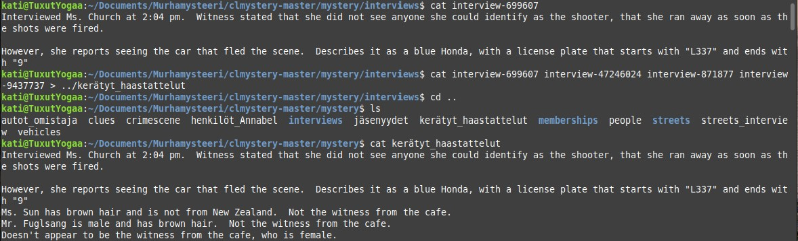
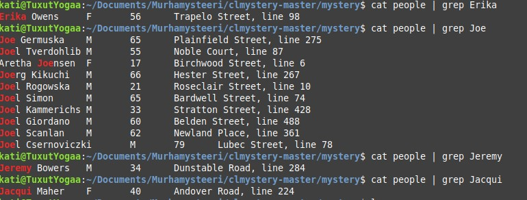

Murhamysteerin aloitukseen kuului, tiedostojen lataus ja purku koneelle. Lisäksi aloittelin ohjeiden luvusta ja tutustuin "rikospaikkaan". Komennolla cat katsoin crimescene tiedostoa, joka oli valtava.
Murhamysteerin aloitukseen kuului, tiedostojen lataus ja purku koneelle. Lisäksi aloittelin ohjeiden luvusta ja tutustuin "rikospaikkaan". Komennolla cat katsoin crimescene tiedostoa, joka oli valtava.
Etsin vihjeitä crimescene tiedostosta alla olevalla komennolla ja tein niistä oman tiedoston. Vihje oli hieman ristiriitainen, mutta erityisesti minua kiinnosti tuo henkilön pituus, lompakko ja sen sisältämät kortit sekä nimi Annabel.
Lähdin tutkimaan kyseisiä jäsenkortteja ja päättelin, että ne olisivat kuuluneet Annabel nimiselle henkilölle ja lähdin kartoittamaan tätä. Tein niistäkin omat tiedostot.
Etsin Annabel nimisten henkilöiden osoitteita ja tein niistä myös oman tiedoston helpottaakseni murhamysteerin ratkaisua, jotta voisin aina palata tarvittaessa helposti kyseisiin tietoihin.
Tässä varmaankin hieman harhauduin. Yritin kuitenkin jostain syystä kartoittaa Annabel nimisten omistajien autot.
Palasin taas Annabel nimisten osoitteisiin. Kyseisessä kuvassa näkyy myös sukupuoli muiden tietojen lisäksi.
Katsoin osoitteiden perusteella annetut haastattelut ja tallensin ne omaksi tiedostoksi. Aikamoinen salapoliisi sai olla, että löysi tekstin mitä pitää hakea.
Haastattelut haettuna tekstinä. Tässä kiinnitin huomioni, että Ms. Church sanoi, että oli nähnyt auton merkiltään Honda ja väriltään sininen rikospaikalla. Oli myös osannut kertoa, että rek.nro alkoi L337 ja päättyi numeroon 9. Tämä oli tärkeä vihje.
Etsin siis nyt autoja merkiltään Honda, väriltään sininen ja rekisteriltään L337..9 Tässä oli myös ratkaisevana tietona listattu kuskien pituus. Tästä päästään ihan ekaan vihjeeseen, joka oli pankkiautomaatin kuva henkilöstä (mies), jonka pituus 6 ja vähän päälle. Tämän perusteella minulla oli 4 epäiltyä nimiltään: Erika Owens, Joe Germuska, Jeremy Bowers ja Jacqui Maher. Nämä valikoituivat auton tietojen ja kuskin pituuden perusteella.
Halusin selvittää seuraavaksi heidän haastattelut, joten selvitin ne osoitteiden perusteella.
Osoitteiden perusteella sain tuollaiset haastatteluiden numerot ja tein siitä oman tiedoston uudet_epäillyt. Tässä kuvassa näkyy haastattelut, niiden avulla tein päätelmän syyllisestä, jolla ei ollut alibia. Varo juonipaljastuksia !!
Tähän tulokseen tultuani päätin hakeutua solutions kohtaan ja syöttää sinne epäillyni nimen. Se meni kerrasta oikein. Vihjeitä en käyttänyt. Olisinkohan niillä saanut hakuni järkeviksi. Tekoälyn kanssa puolestaan jouduin hieman keskustelemaan. Tehtävä oli raskas - sain tähän kulumaan koko päivän. Huh.
Yhteenvetona todettakoon, että opin ainakin putkittamaan komentoja saadakseni kaikki haluamani samaan tiedostoon. Autojen rekisterinumerojen ja rivien kanssa tuli taisteltua kunnolla. Tilannetta vaikeutti, kun ne oli rivitetty eri riveille. Kaikkia tietoja oli todella paljon. Voi olla että erilaiset muut komennot olisivat olleet viisaimpia käyttää, mutta tällä tavalla nyt mentiin. Jos nyt jotain erityisesti tässä tehtävässä opin, niin myös liikkumaan eri tiedostojen välillä ja lisäämään tiedostoja haluamaani paikkaan. Erehdyksien kautta opin myös poistamaan lisäämäniä tiedostoja, koska koin lisääväni niitä vääriin paikkoihin.